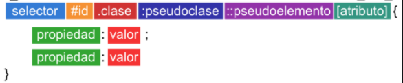
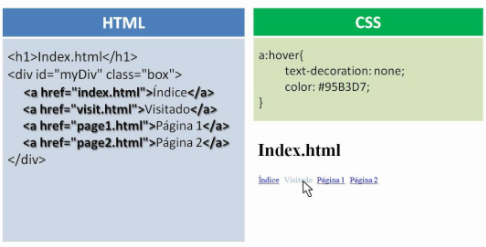

SELECTORES CSS
- DEFINICION:
Es el identificador en la hoja de estilos del elemento o elementos de DOM a los que se aplicaran las declaraciones contenidas en la regla de la que forma parte dicho selector.
El termino selector CSS puede referirse por igual a cualquiera de los cuatro tipos de selectores CSS que existen clasificados por la composicion de su nombre:
- Selector CSS simple: Es aquel que formado solo por una unica cadena textual, sin ningun combinador.
- Selector CSS compuesto: Es una cadena de selectores simples sin combinadores.
- Selector CSS complejo: Es una secuencia o cadena de selectores separados por combinaciones.
- Lista de selectores CSS: La conforman dos omas selectores de cualquier tipo separados por una coma (,).
"Tomado de: colaboradores de Wikipedia. (2014, 24 diciembre). Selector CSS. Recuperado 25 de octubre de 2020, de https://es.wikipedia.org/wiki/Selector_CSS#:%7E:text=El%20selector%20CSS%20es%20el,le%20llama%20sujeto%20del%20selector.""

"M, A. (2019, 24 marzo). Figura 2. Selectorcss [imagen]. Recuperado de https://www.um.es/docencia/barzana/DAWEB/2017-18/daweb-tema-11-selectores-en-css.html" 
"Guzman Garcia. (2012, 8 octubre). CSS: selectores [Archivo de vídeo]. Recuperado de https://www.youtube.com/watch?v=jNQfWCjV8Os"